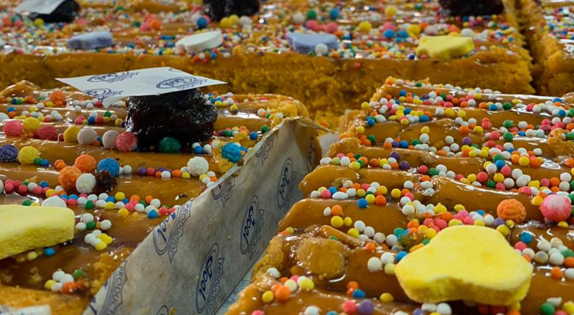

PANETÓN
El paneton clásico es un postre navideño propio de Italia, hecho con una masa tipo brioche, pasas y frutas confitadas. A pesar de que la receta de panettone italiano es la original, se ha extendido por todo el mundo obteniendo otros nombres, como pan dulce de Navidad o panetón navideño, y se le han cambiado algunos ingredientes. Por ejemplo, algunos hacen panettone con chispas de chocolate en vez de usar frutas y pasas. Podemos encontrarlo en la mayoría de tiendas y supermercados, pero, como todo pastel, también podemos elaborarlo nosotros mismos en casa y conseguir un panettone mucho más sabroso. Anímate y sorprende a tus familiares e invitados con este rico postre siguiendo los sencillos pasos de este artículo de un como sobre cómo hacer panettone de Navidad fácil y delicioso.


TURRÓN
El turrón de Doña Pepa es el postre de moda en Perú cada vez que llega octubre, mes del Señor de los Milagros. Este dulce peruano se ha hecho un nombre con el pasar de los años y cada vez se ha vuelto más conocido, por lo que muchas empresas se animaron a emprender con ello. Una de ellas es Productos Joel.
Brownie navideño
Un brownie es un bizcocho de chocolate pequeño, típico de la gastronomía de Estados Unidos. Se llama así por su color marrón oscuro, o brown en inglés. A veces se cubre con jarabe espeso de chocolate y puede llevar dentro trocitos de nueces, chocolate butterscotch (una especie de toffee crujiente) o mantequilla de maní. Se cree que la primera mención a un brownie es en 1896, aunque esta receta no contenía chocolate, sino una melaza. Se creó cuando un importante repostero estadounidense se olvidó de echar levadura a su pastel de chocolate. Así nació este compacto bizcocho.
ROSCA NAVIDEÑA
El roscón de Reyes (en algunos países de Hispanoamérica rosca de Reyes o pastel de Rey) es un bollo elaborado con una masa dulce con forma de toroide adornado con rodajas de fruta confitada, escarchada o cristalizada de colores variados. Puede rellenarse de nata montada o crema, en la actualidad también de moca, trufa o chocolate, y se introducen en su interior sorpresas. Normalmente contiene una figurita de cerámica o de plástico escondida en la masa, que los comensales se encuentran en alguna rebanada. También se introduce un haba seca y es tradición que aquel que encuentre el haba pague el roscón. El roscón de Reyes se sirve la noche de Reyes, 5 de enero, y el 6 de enero día de Reyes. El roscón de Reyes es un dulce navideño característico de la cultura española, pero por influencia posterior este bollo navideño se sirve igualmente en otros países hispanohablantes (principalmente en México) así como en Francia, Bélgica y Portugal. La masa con la que suele estar elaborado se aromatiza con agua de azahar, que le proporciona un aroma característico.